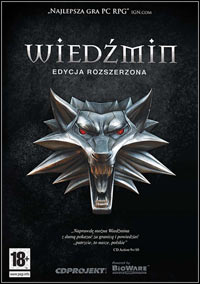
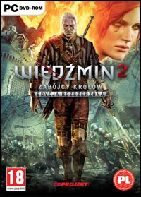
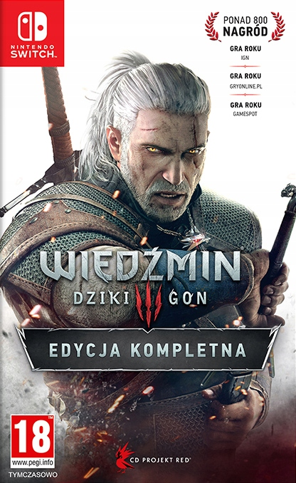

Wiedźmin 1
Wiedźmin (ang. The Witcher) – gra komputerowa typu RPG, stworzona przez CD Projekt RED. Rozgrywka toczy się w świecie stworzonym przez polskiego pisarza fantasy, Andrzeja Sapkowskiego. Gra została wydana na całym świecie 26 października 2007 r. Jej głównym bohaterem jest wiedźmin Geralt, a fabuła obejmuje okres po wydarzeniach opisanych w Sadze o wiedźminie.
Akcja gry rozpoczyna się w kilka lat po wydarzeniach opisanych w sadze przez Andrzeja Sapkowskiego. Tajemniczy osobnik ucieka w deszczu przez las, a następnie pada z wycieńczenia. Krótko potem zostaje odnaleziony przez grupę wiedźminów, którzy rozpoznają w nim rzekomo zmarłego Geralta z Rivii. Geralt zostaje zabrany do Kaer Morhen. Tam spotyka swoich starych znajomych. Bohater jednak cierpi na amnezję i nie pamięta żadnych wydarzeń ze swojej przeszłości.
Wiedźmin 2 Zabójcy Królów
Wiedźmin 2: Zabójcy Królów (ang. The Witcher 2: Assassins of Kings) - gra komputerowa z gatunku RPG, stworzona przez polskie studio CD Projekt RED. W grze kierujemy losami wiedźmina Geralta z Rivii, które dzieją się po wydarzeniach znanych z pierwszej części.
Po stłumieniu rebelii Wielkiego Mistrza Zakonu Płonącej Róży i ocaleniu króla Foltesta wiedźmin Geralt wyrasta na jedną z centralnych postaci temerskiego dworu. W tych niespokojnych czasach Foltest próbuje przywrócić ład w swoim królestwie, i składa wiedźminowi propozycję nie do odrzucenia – Geralt staje się osobistym ochroniarzem monarchy, gwarantując mu bardzo korzystną zapłatę za pomoc, obiecując Geraltowi że stanie się najbogatszym wiedźminem świata.
Wiedźmin 3 Dziki Gon
Wiedźmin 3: Dziki Gon (ang. The Witcher 3: Wild Hunt) – trzecia i ostatnia odsłona serii gier komputerowych Wiedźmin, opowiadającej historię Geralta z Rivii, studia CD Projekt RED. Historia gry toczy się po wydarzeniach z drugiej części. Fabuła skupia się głównie na dwóch wydarzeniach – inwazji Nilfgaardu na Północne Królestwa oraz misji Geralta, polegającej na pozbyciu się Dzikiego Gonu. Gra zadebiutowała 19 maja 2015.
Powróciły także inne postacie z drugiej części, ale tym razem znajdują się w nieco innej sytuacji – w grze Iorweth nie występuje, aczkolwiek komando Scoia'tael już tak, Vernon Roche i Ves nie są już ludźmi Foltesta, a Letho porzucił ścieżkę królobójstwa i ucieka przed Cesarstwem (jednakże jeśli pod koniec poprzedniej części gry zabijemy Letho, postać w ogóle nie pojawi się w grze). W obliczu zagrożenia ze strony Nilfgaardu każdy się zmieni i będzie podejmować mniej lub bardziej rozsądne decyzje.